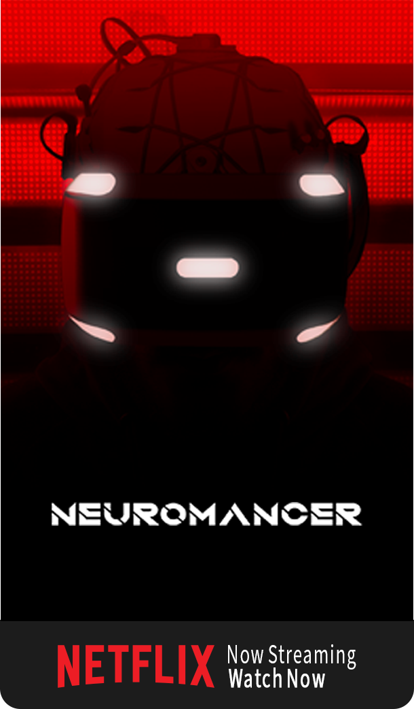
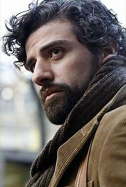
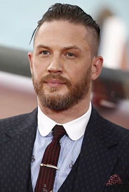
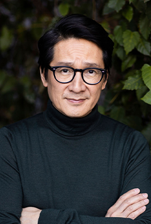

NEUROMANCER (2023)
A man reborn in the new world of the matrix.
- PG-13
- Sci-Fi & Cyberpunk
- Fantasy
- 130m
Overview
In near-future Japan, Case (Oscar Isaac), a computer technician, loses his job due to bad practice and neurological damage, preventing him from access to a cyber network called the "matrix." He then receives an offer from a mysterious mercenary to restore his nervous system, but must work shady and illegal jobs to maintain his neurological repairs.
CAST



Neuromancer a Netflix production with association with orginal book author William Gibson
Produced by Illya Naishuler with Executive Producers: Dave Filoni and Jacob Wright
All scenes were shot at the Southern California soundstage using 3D environments
Some flashing lights sequences or patterns may affect photosensitve viewers